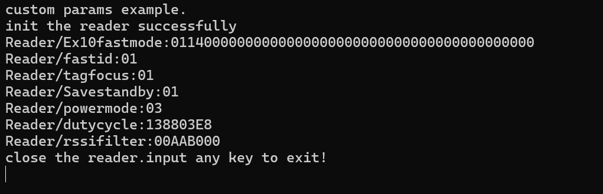

载入中...
搜索中...
未找到
自定义参数配置
自定义参数配置主要是为了适应读写器功能扩展和不同产品相关差异，自定义参数配置获取也使用ParamGet和
ParamSet函数，并且固定参数关键字为
MTR_PARAM_CUSTOM。
参数值类型也固定为CustomParam_ST类型。 CustomParam_ST 类型定义较为复杂。不过用法基本固定，用此项参数配置直接引用相关示例即可。
参数值类型也固定为CustomParam_ST类型。 CustomParam_ST 类型定义较为复杂。不过用法基本固定，用此项参数配置直接引用相关示例即可。
C语言代码示例14-自定义扩展参数
/**
* 自定义扩展参数/custom paramters
*/
#include < stdio.h>
#include "ModuleReader.h"
void main()
{
char c;
int hreader;
READER_ERR err;
int ants[] = {1};
int tagcnt;
int timeout=200;
TAGINFO tag_;
int i;
int f;
CustomParam_ST cpara,cst;
unsigned char paraBuf_exfast[50+22]="Reader/Ex10fastmode";
unsigned char paraBuf_fastid[51]="tagcustomcmd/fastid";
unsigned char paraBuf_tagfocus[51]="tagcustomcmd/tagfocus";
unsigned char paraBuf_savby[51]="Reader/Savestandby";
unsigned char paraBuf_ducyc[54]="Reader/dutycycle";
unsigned char paraBuf_pwmd[51]="Reader/powermode";
unsigned char paraBuf_rssif[54]="Reader/rssifilter";
short timeout_keep=5000;//ms
short timeout_base=1000;//ms
char out[400];
printf("custom params example.\n");
//连接地址为com4,如果指定波特率则可以例如:com4:921600,模块天线端口为1，
//注意并非已连接天线的数量，指模块的天线端口总数量
//connect to "com4",if you want to speciate the baudrate,you could input the address as "com4:921600".1 means 1 antenna port.
//note:the antenna port numbers is all of reader， not the connected antennas numbers.
err=InitReader_Notype(&hreader, "192.168.1.160", 1);
if (err != MT_OK_ERR)
{
printf("init the reader err :%d,input any key to exit!\n", err);
scanf("%c",&c);
return ;
}
printf("init the reader successfully\n");
//切换通用快速模式和EX快速模式/switch fastmode and EX fast mode
paraBuf_exfast[50]=1;// 1 enable ex10fastmode，0 genral fast mode
paraBuf_exfast[51]=20;
for(i=52;i< paraBuf_exfast[51];i++)
{
if(i==0)
{
paraBuf_exfast[i]=0;//0 more tags, 1 less tags.
}
paraBuf_exfast[i]=0;
}
cpara.pCusParam =paraBuf_exfast;
cpara.CParamlen=22;
err = ParamSet(hreader,MTR_PARAM_CUSTOM, &cpara);
memset(paraBuf_exfast+50,0,22);
cst.pCusParam =paraBuf_exfast;
err =ParamGet(hreader,MTR_PARAM_CUSTOM,&cst);
if (err != MT_OK_ERR)
{
printf("get fastmode err :%d,input any key to exit!\n", err);
scanf("%c",&c);
}
memset(out,0,400);
Hex2Str((unsigned char*)(cst.pCusParam)+50,22,out);
printf("Reader/Ex10fastmode:%s\n",out);
//启用 fastid /enable fastid
paraBuf_fastid[50]=1;
cpara.pCusParam =paraBuf_fastid;
cpara.CParamlen=1;
err = ParamSet(hreader,MTR_PARAM_CUSTOM, &cpara);
memset(paraBuf_fastid+50,0,1);
cst.pCusParam =paraBuf_fastid;
err =ParamGet(hreader,MTR_PARAM_CUSTOM,&cst);
if (err != MT_OK_ERR)
{
printf("get fastmode err :%d,input any key to exit!\n", err);
scanf("%c",&c);
}
memset(out,0,400);
Hex2Str((unsigned char*)(cst.pCusParam)+50,1,out);
printf("Reader/fastid:%s\n",out);
//启用 tagfocus /enable tagfocus
paraBuf_tagfocus[50]=1;
cpara.pCusParam =paraBuf_tagfocus;
cpara.CParamlen=1;
err = ParamSet(hreader,MTR_PARAM_CUSTOM, &cpara);
memset(paraBuf_tagfocus+50,0,1);
cst.pCusParam =paraBuf_tagfocus;
err =ParamGet(hreader,MTR_PARAM_CUSTOM,&cst);
if (err != MT_OK_ERR)
{
printf("get tagfocus err :%d,input any key to exit!\n", err);
scanf("%c",&c);
}
memset(out,0,400);
Hex2Str((unsigned char*)(cst.pCusParam)+50,1,out);
printf("Reader/tagfocus:%s\n",out);
//启用 Savestandby /enable Savestandby
paraBuf_savby[50]=1;
cpara.pCusParam =paraBuf_savby;
cpara.CParamlen=1;
err = ParamSet(hreader,MTR_PARAM_CUSTOM, &cpara);
memset(paraBuf_savby+50,0,1);
cst.pCusParam =paraBuf_savby;
err =ParamGet(hreader,MTR_PARAM_CUSTOM,&cst);
if (err != MT_OK_ERR)
{
printf("get Savestandby err :%d,input any key to exit!\n", err);
scanf("%c",&c);
}
memset(out,0,400);
Hex2Str((unsigned char*)(cst.pCusParam)+50,1,out);
printf("Reader/Savestandby:%s\n",out);
//启用 powermode /enable powermode
paraBuf_pwmd[50]=3;
cpara.pCusParam =paraBuf_pwmd;
cpara.CParamlen=1;
err = ParamSet(hreader,MTR_PARAM_CUSTOM, &cpara);
memset(paraBuf_pwmd+50,0,1);
cst.pCusParam =paraBuf_pwmd;
err =ParamGet(hreader,MTR_PARAM_CUSTOM,&cst);
if (err != MT_OK_ERR)
{
printf("get powermode err :%d,input any key to exit!\n", err);
scanf("%c",&c);
}
memset(out,0,400);
Hex2Str((unsigned char*)(cst.pCusParam)+50,1,out);
printf("Reader/powermode:%s\n",out);
//设置占空比 /dutycycle
paraBuf_ducyc[50]=(unsigned char)((timeout_keep&0xff00)>>8);
paraBuf_ducyc[51]=(unsigned char)(timeout_keep&0x00ff);
paraBuf_ducyc[52]=(unsigned char)((timeout_base&0xff00)>>8);
paraBuf_ducyc[53]=(unsigned char)(timeout_base&0x00ff);
cpara.pCusParam =paraBuf_ducyc;
cpara.CParamlen=4;
err = ParamSet(hreader,MTR_PARAM_CUSTOM, &cpara);
memset(paraBuf_ducyc+50,0,4);
cst.pCusParam =paraBuf_ducyc;
err =ParamGet(hreader,MTR_PARAM_CUSTOM,&cst);
if (err != MT_OK_ERR)
{
printf("get dutycycle err :%d,input any key to exit!\n", err);
scanf("%c",&c);
}
memset(out,0,400);
Hex2Str((unsigned char*)(cst.pCusParam)+50,4,out);
printf("Reader/dutycycle:%s\n",out);
//启用 rssifilter /enable rssifilter
paraBuf_rssif[50]=1;
paraBuf_rssif[51]=0xAA;
paraBuf_rssif[52]=-80;
paraBuf_rssif[53]=0x00;
cpara.pCusParam =paraBuf_rssif;
cpara.CParamlen=4;
err = ParamSet(hreader,MTR_PARAM_CUSTOM, &cpara);
memset(paraBuf_rssif+50,0,4);
cst.pCusParam =paraBuf_rssif;
err =ParamGet(hreader,MTR_PARAM_CUSTOM,&cst);
if (err != MT_OK_ERR)
{
printf("get rssifilter err :%d,input any key to exit!\n", err);
scanf("%c",&c);
}
memset(out,0,400);
Hex2Str((unsigned char*)(cst.pCusParam)+50,4,out);
printf("Reader/rssifilter:%s\n",out);
printf("close the reader.input any key to exit!\n");
CloseReader(hreader);
scanf("%c",&c);
}
C语言代码示例14-自定义扩展参数 输出结果

- 制作者
 1.11.0
1.11.0